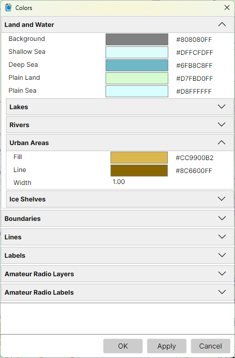
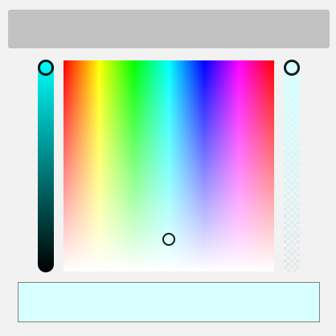

Colors Dialog
Tools > Colors opens the Colors dialog, which sets the colours, line widths and label faces of everything drawn on the map. It works as the Settings Dialog does: sections that fold open, Reset on a right-click of a field's name, and OK, Apply and Cancel. Apply redraws both maps in the new colours while the dialog stays open, so you can try a colour before you keep it.

Each colour has an opacity as well, so a fill can let the relief show through it.
Picking a Colour
Each colour field shows a swatch of the colour and its value, #RRGGBBAA - red, green, blue and
opacity in hexadecimal. Right-click the value and pick Copy to copy it to the clipboard.
Click the swatch to open the colour picker:

- the large square - the hue from left to right, and the saturation from top to bottom, full colour at the top fading to white at the bottom. Click or drag in it to pick a colour;
- the slider on the left - the brightness, from black at the bottom to full brightness at the top;
- the slider on the right - the opacity, from fully transparent at the bottom, where the checkerboard shows through, to opaque at the top;
- the bar at the bottom - the colour picked so far.
The field takes the new colour as you pick it. Click outside the picker or press Esc to close it, then Apply or OK to redraw the maps in it.
Sections
- Land and Water - the background, the shallow and the deep sea, the plain land that replaces the relief when Land Relief is off and the plain sea that replaces the ocean depth when Ocean Relief is off, the lakes, rivers, urban areas and ice shelves;
- Boundaries - the coastline; the borders, which strengthen and widen as the map zooms in; the four fills of the time zones and their boundaries; the date line;
- Lines - the graticule, the azimuth and distance lines, the gray line's shadows and terminator, and the highlight of an item found from the Lists Panel;
- Labels - each kind of label: countries, big and small cities, island groups, islands, oceans, seas, lakes, rivers, mountain ranges, summits, regions, ice shelves and the graticule's degrees. Each has a colour, a halo colour around the letters, a size, and bold and italic.
With the Amateur Radio functions on, two more sections set the colours of the Amateur Radio layers and labels; see The Amateur Radio Switch.
The colours are saved in a file of their own, Colors.json, in the user data folder.